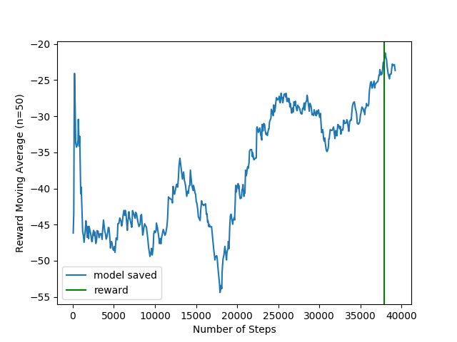

In this month, the work was mainly devoted to mitigating the sample efficiency problem of Reinforcement Learning. However, the first days were spent integrating the LogiTech steering wheel and pedals in CARLA and fixing unexpected crashes of the simulator.
CARLA
LogiTech
Since the main objective of this Ph.D. is to combine Imitation Learning (IL) and Reinforcement Learning (RL), it is mandatory create an interface where the humans can provide the demonstrations.
For that, we integrated the LogitTech steering wheel and pedals in CARLA (issue #6):
Unexpected CARLA Server crashes
After implementing all infrastructure related with CARLA, I tried to run a simple RL agent over 10^6 steps. However, the CARLA Server was crashing after 30/40k steps:
Signal 11 caught.
Malloc Size=65538 LargeMemoryPoolOffset=65554
4.26.2-0+++UE4+Release-4.26 522 0
Disabling core dumps.
CommonUnixCrashHandler: Signal=11
Engine crash handling finished; re-raising signal 11 for the default handler. Good bye.
./CarlaUE4.sh: line 5: 13 Segmentation fault (core dumped) "$UE4_PROJECT_ROOT/CarlaUE4/Binaries/Linux/CarlaUE4-Linux-Shipping" CarlaUE4 "$@"
After several unsuccessful attempts to find the the cause of the error, I downgraded CARLA version from 0.9.13 to 0.9.10.1 and the problem was solved (issue #29).
Reinforcement Learning
Sample Efficiency
Reinforcement Learning is known to be sample inefficient, that is, it needs a lot of samples to learn. This problem is even more evident when using high dimensional inputs as is the case of images. A number of approaches have been proposed to mitigate this problem:
- Data augmentation: paper
- Auto Encoder paper
- Contrastive Learning paper
- DDPG with sigma decaying paper
These techniques are meant to be included in a generic architecture composed of an image encoder followed by a Deep RL algorithm. To start, I decided to implement RegNet as image encoder and then Soft Actor Critic as the deep RL algorithm.
Regnet followed by SAC
The architecture of this agent is the following:
The navigation command is a high-level indication provided by the global planner. Examples include "go straight" and "turn left". This information is conveyed into the network using one-hot encoding.
In the future, this will be replaced by a fully-conected network that receives the next n waypoints and outputs a feature vector of m elements.
In addiction to the navigation comand, we are also taking in consideration 2 elements: current velocity normalized between 0 and 1, and the current steering angle.
This system was tested in CARLA, and the results were embarrassingly bad (issue #17):
The cause of this behavior was improper exploration. The exploration of the agent consists in generating random values for the throttle, steer and braking.
However, by generating random values the car will never start moving because for the car to start to move, the throttle must be pressed for some seconds while leaving the brake untouched.
RegNet followed by SAC with longitudinal controller
To overcome the trottle/brake issue, we decided to change the outputs of the agent to steering angle and predicted speed, and then implement a PID controller to convert the predicted speed into throttle and brake commands (issue #18).
The architecture of the system was then change to:
And the curve of the PID when setting desired speed to 6 m/s was the following (1 step = 0.1s):
This change was sufficient to fix the throttle/brake issue, however, the performance of the agent was still bad. Couldn't even drive on straight roads.
The reward plot was the following:

And an example of the driving is the following:
After some research, I realized the problem was the number of parameters of RegNet (4 milion). In every paper I read of Reinforcement Learning from pixels, the maximum number of parameters of the encoder was 1.5M.
Simple Encoder followed by SAC with longitudinal controller
To overcome the problem with the size of the encoder, I implemented a simple encoder with convolution layers - 1 million of parameters (issue #20).
The reward plot looks much better:
And the driving was also much better:
This architecture will be referred to as the baseline architecture in this blog.